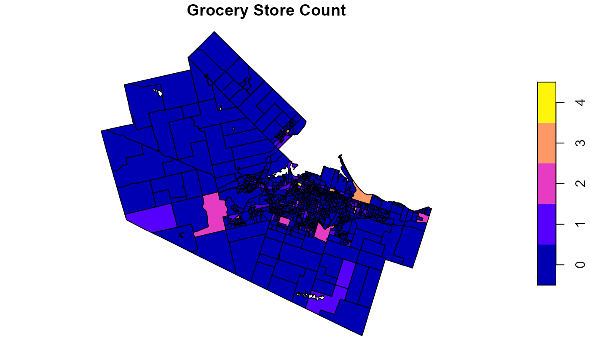

Load packages
The sf package is used to handle vector spatial data.
library(geog712package)
library(sf)
#> Linking to GEOS 3.12.1, GDAL 3.8.4, PROJ 9.3.1; sf_use_s2() is TRUE
grocery_DA data
Load and plot the grocery_DA vector data. This dataset
contains the geometry of all the census tracts in Hamilton and includes
two variables: the population count in 2021 and the grocery store counts
in each census tract.

plot(grocery_DA[ ,"Freq"],
main = "Grocery Store Count")
An OLS simple linear regression of these two variables
lm1 <- lm(Freq ~ v_CA21_1..Population..2021, data = grocery_DA)
summary(lm1)
#>
#> Call:
#> lm(formula = Freq ~ v_CA21_1..Population..2021, data = grocery_DA)
#>
#> Residuals:
#> Min 1Q Median 3Q Max
#> -0.4473 -0.0986 -0.0917 -0.0872 3.8979
#>
#> Coefficients:
#> Estimate Std. Error t value Pr(>|t|)
#> (Intercept) 6.691e-02 2.135e-02 3.134 0.00178 **
#> v_CA21_1..Population..2021 4.985e-05 2.669e-05 1.868 0.06211 .
#> ---
#> Signif. codes: 0 '***' 0.001 '**' 0.01 '*' 0.05 '.' 0.1 ' ' 1
#>
#> Residual standard error: 0.3836 on 889 degrees of freedom
#> Multiple R-squared: 0.003909, Adjusted R-squared: 0.002789
#> F-statistic: 3.489 on 1 and 889 DF, p-value: 0.06211Based on this simple regression (p-value = 0.06 > 0.05), the population count is not a significant predictor of the grocery store count in Hamilton.